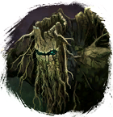

Открыть в интерактивной вики →
| Уровень | лёгк. 45 / норм. 55 / тяжел. 65 |
|---|---|
| Сила (PvE) | 1508 |
| Аспект арены | Farao |
| Здоровье | лёгк. 4000 / норм. 8000 / тяжел. 16 000 |
| Мана | 6000 |
| Выносливость | 7000 |
Локация
- Пещера Голема
- Пещера Геоморфа
Команда

Дроп


Умения
- Таран — обычная атака
- Бросок камнем
- Толстокожесть